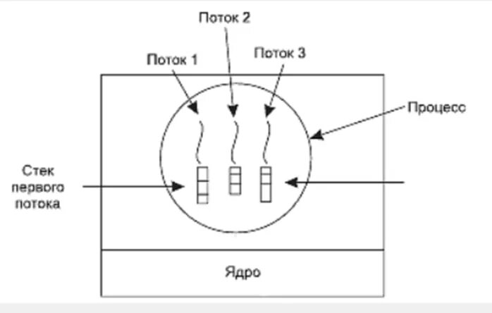
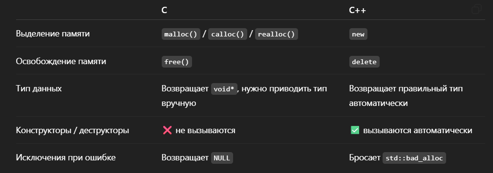

Представление чисел и работа с памятью
Как данные размещаются в объектах и когда их можно использовать.
Структуры, объединения, перечисления
struct объединяет несколько полей. Доступ через объект записывается как point.x, через указатель — ptr->x. Между полями возможны байты заполнения для выравнивания, поэтому sizeof(Point) может превышать сумму размеров полей.
У union поля используют общую память. Учитывайте активный член и правила его времени жизни. Для безопасного выбора одного из нескольких типов подойдёт std::variant. enum class задаёт именованные варианты вроде State::kReady.
Время жизни
Локальные объекты обычно имеют автоматическое время хранения и уничтожаются при выходе из блока. Объекты со статическим временем хранения живут до завершения программы, thread_local — до завершения своего потока. Динамическое время жизни управляется через владельца ресурса.
new Tвыделяет память и создаёт объект. Парные операции —newиdelete,new[]иdelete[].std::mallocвыделяет сырую память и не вызывает конструкторы,std::callocдополнительно зануляет байты. Освобождение выполняетstd::free.- Для прикладного кода выбирайте
std::vector,std::stringи умные указатели, которые освобождают ресурсы автоматически. Висячие ссылки, выход за границы и повторное освобождение приводят к неопределённому поведению. AddressSanitizer помогает найти многие такие ошибки.
Стек вызовов и динамическая память
На типичной платформе стек вызовов хранит кадры активных функций. При вызове появляется новый кадр, при возврате снимается последний добавленный. Указатель стека участвует в управлении этим пространством. Конкретное направление роста и расположение данных зависят от платформы и компилятора. Частые вложенные вызовы, глубокая рекурсия и большие локальные массивы могут исчерпать доступный стек.
Динамическая память позволяет создавать объекты, размер и время жизни которых определяются во время выполнения. Её объём ограничен доступными ресурсами процесса. Выделение через обычный new при нехватке памяти может бросить std::bad_alloc. Освобождение блока не перемещает остальные объекты автоматически, а свободные участки разных размеров могут приводить к фрагментации.
У локального std::vector<int> values(1000) сам объект контейнера имеет автоматическое время хранения, а его элементы размещены в отдельно выделенном буфере. При росте vector может выделить новый буфер, перенести элементы и освободить старый. При уничтожении контейнера освобождается и его буфер. Сборщик мусора ищет объекты, которые больше недостижимы из программы. В обычном C++ ресурсами управляют через время жизни владельцев и RAII.
Представление чисел
У вещественного типа ограниченная точность. Десятичное 0.1 обычно округляется при хранении, поэтому результат вычислений может слегка отличаться от математического. При сравнении результатов используйте допуск, осмысленный для масштаба задачи.
Самопроверка
Почему функция не должна возвращать ссылку на собственную локальную переменную? В какой момент перестаёт существовать её объект?
Числа в памяти PC
LW1 : Цифры хранятся в памяти компьютера в виде двоичного кода, представляющего собой последовательности нулей и единиц Отрицательные числа хранятся в памяти компьютера с помощью дополнительного кода, который позволяет заменить вычитание на сложение. Для этого сначала получают прямой код положительного числа, затем инвертируют все биты (получая обратный код) и прибавляют к нему единицу. Старший бит в таком представлении становится знаковым: 0 — для положительных, 1 — для отрицательных чисел.
Работа с памятью
На одном ядре операционная система переключает выполнение между задачами, например редактором и музыкальным проигрывателем. Планировщик может использовать аппаратные прерывания таймера. Длина кванта зависит от ОС и политики планирования.
Процесс - программа и ее ресурсы запущенные в операционной системе
У процесса есть независимое адресное пространство
У потоков СТЕК - область памяти для потока (представь в виде тарелок только сверху ) pop push top

Виртуальные адреса отображаются на страницы физической памяти. Отображённые области могут иметь промежутки, а соседние виртуальные страницы могут находиться в разных местах физической памяти.
Операционная система изолирует адресные пространства процессов. Для обмена данными процессы используют контролируемые механизмы, например общую память.

Подкачка позволяет выгружать часть страниц памяти на диск и загружать их по требованию.
Kernel Space - ядро системы User Space - пользовательское пространство
Segment - адреса с до мапятся в адрес на диске
Сегмент описывает диапазон виртуальных адресов и его назначение, например отображение файла или область данных.

Стек вызовов хранит кадры активных функций. Доступный размер стека ограничен настройками платформы. Схема стека вызовов Heap - динамическая память или куча
- В отличии от стека позволяет создавать динамические структуры большого размера
- Управление жизнью объектов в куче “ручное”

Стек вызова

Функции работы с памятью StdLib.h
malloc
Если выделена память, она должна быть освобождена
Если программа потребляет память линейно, значит она не правильная
- malloc не гарантирует выделение памяти
- не забывать выставлять указатель в NULL после освобождения
- free(NULL) ничего не делает
#include <iostream>
#include <stdlib.h>
int main(void){
int* ar = (int*)malloc(100000);
std::cout << *ar << "\n";
free(ar);
return 0;
}Когда уместно использовать кучу
Уместно:
-
Большие или переменные по размеру структуры, которые не помещаются на стеке или размер известен только в рантайме (ввод
nот пользователя, чтение файла и т.п.). -
Время жизни данных дольше области видимости, например, объект создаётся в функции, а используется после её завершения.
-
Полиморфизм и фабрики — когда возвращаешь базовый интерфейс, а реальный тип решается во время выполнения (часто вместе с умными указателями).
-
Совместное владение или разделение данных между несколькими частями программы (используй
shared_ptr/weak_ptr). -
Избежать переполнения стека при глубокой рекурсии или огромных локальных структурах.
-
Контейнеры STL (внутри они используют кучу):
std::vector,std::string,std::mapи др.
Неуместно (или лучше избегать):
-
Маленькие, краткоживущие переменные, которые удобно положить на стек — проще, быстрее, безопаснее.
-
Ручной
new/deleteв современном C++ — предпочтительны RAII и контейнеры/умные указатели (std::unique_ptr,std::make_unique,std::vector). -
Когда владение неясно — это приводит к утечкам/двойному удалению. Если без явной причины нужен «сырой» указатель — скорее всего дизайн можно улучшить.
calloc
Тоже самое, что и malloc только выделяет k памяти
#include <iostream>
#include <stdlib.h>
int main(void){
int *a = (int *)malloc(3 * sizeof(int));
a = (int*)realloc(a, 5 * sizeof(int));
std::cout << a << "\n";
free(a);
return 0;
}new
new выделяет память и создаёт объект, вызывая его конструктор. malloc выделяет необработанную память.

Segmentation fault